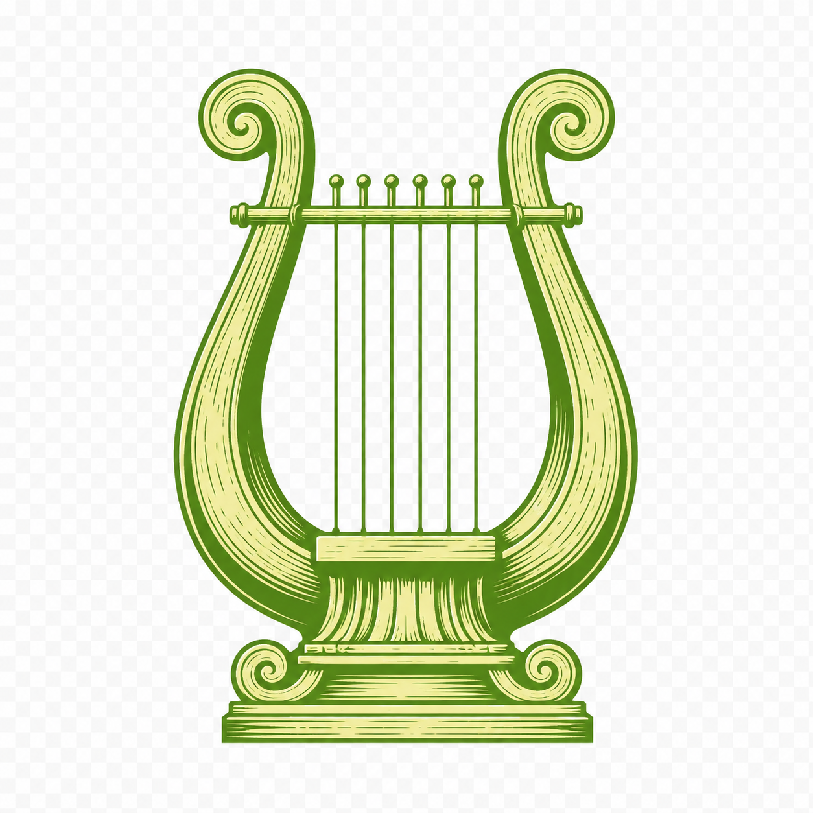

Thema's
Thematische aanpak van grammatica en cultuur.
bekijken →S.O. Groenhove campus Atheneum Waregem

Thematische aanpak van grammatica en cultuur.
bekijken →Overzichtelijke samenvattingen per onderwerp.
bekijken →Interactieve oefeningen, voortgang bijgehouden.
bekijken →